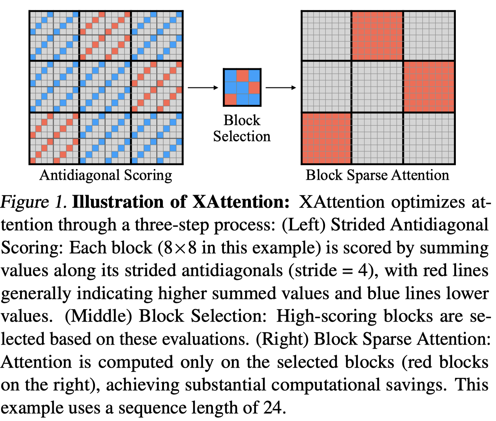

XAttention: Block Sparse Attention with Antidiagonal Scoring

Abstract
Long-Context Transformer Models (LCTMs) are vital for real-world applications but suffer high computational costs due to attention's quadratic complexity. Block-sparse attention mitigates this by focusing computation on critical regions, yet existing methods struggle with balancing accuracy and efficiency due to costly block importance measurements. In this paper, we introduce XAttention, a plug-and-play framework that dramatically accelerates long-context inference in Transformers models using sparse attention. XAttention's key innovation is the insight that the sum of antidiagonal values (i.e., from the lower-left to upper-right) in the attention matrix provides a powerful proxy for block importance. This allows for precise identification and pruning of non-essential blocks, resulting in high sparsity and dramatically accelerated inference. Across comprehensive evaluations on demanding long-context benchmarks-including RULER and LongBench for language, VideoMME for video understanding, and VBench for video generation. XAttention achieves accuracy comparable to full attention while delivering substantial computational gains. We demonstrate up to 13.5x acceleration in attention computation. These results underscore XAttention's ability to unlock the practical potential of block sparse attention, paving the way for scalable and efficient deployment of LCTMs in real-world applications. Code is available at https://github.com/mit-han-lab/x-attention.
Block Sparse Attention的mask估计方法改进，baseline是Minference和FlexPrefill
算法复杂度比FlexPrefill, Minference高，论文中结果显示加速比很好，但根据开源代码复现加速不理想。